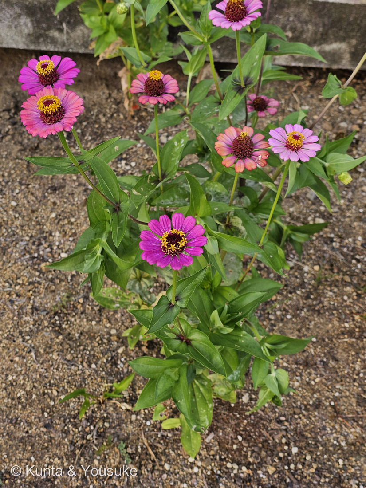
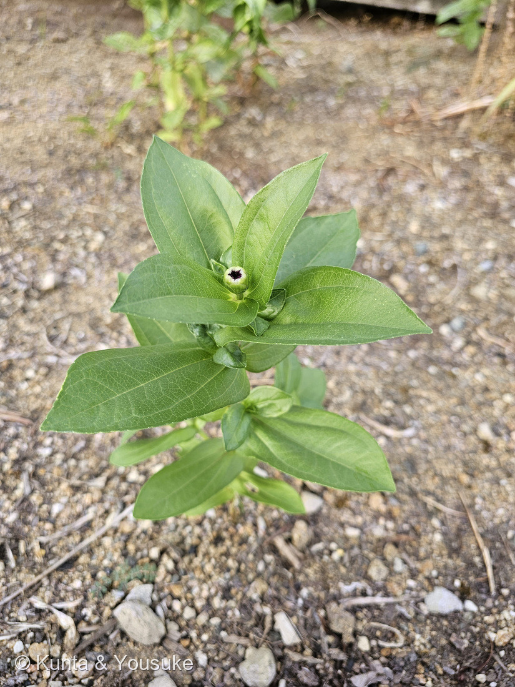

地図を読み込んでいるよ…
🔍 写真も地図も、押しているあいだ拡大して見られるよ（スマホは指を置いてすこし待ってね）。
🌍 の地図＝この子がもともと自生している場所を緑に。メキシコ。
⭐メキシコだけを塗ったよ。⭐同じ日にとなりで撮った165 マリーゴールドも、じつはメキシコ原産——⭐キク科の花壇の花には、メキシコ生まれがずいぶん多いんだね。⚠日本では花壇の一年草で、野生化しているわけではないよ。
⚠ 地図は国（日本と中国だけ県・省）までしか塗れないから、ほんとうの分布より広く見えていることがあるよ。地図はだいたいの場所。正確なところは、上の文を見てね。
ヒャクニチソウ（百日草）
Zinnia elegans L.
別名 · ジニア／チョウキュウソウ（長久草）／中国名 百日菊・百日草／ 原産 · メキシコ／ 見どころ · ⭐ピンクの舌状花と黄色い筒状花＝別々の花の集まり・中心が咲きあがるから百日もつ
キク科 · Asteraceae（ジニア属 Zinnia）── 165 マリーゴールド・155 タンポポのなかま・129 ヨモギと同じキク科
名前と学名の由来 ── ジンさんの名前と、百日の草
- ⭐⭐属名 Zinnia（ジニア）＝ドイツの植物学者ヨハン・ゴットフリート・ジン（Johann Gottfried Zinn／1727〜1759）を記念した名前。⭐32歳で亡くなった人だよ。──⭐この図鑑の「✍️ 人の名前をもらった花」の一人だね。
- ⭐種小名 elegans（エレガンス）＝「優美な」。
- ⭐⭐和名「百日草」＝夏から秋にかけて長期間咲き続けるから。⭐別名の「長久草（チョウキュウソウ）」も、中国名の「百日菊」も、ぜんぶ同じことを言っている。
- ⭐⭐⭐そして、この図鑑には「日数で名前がついた子」が、もう二人いる。
- 110 サルスベリ＝百日紅（ヒャクジツコウ）
- 167 センニチコウ＝千日紅（⭐百日紅より長いから千日）
- ⭐そして、この子＝百日草。
- ⭐「百日」がふたつ、「千日」がひとつ。⭐植物が、咲いている長さで名前をきそっているみたいで、ちょっとおかしい。⚠ ちなみに167 センニチコウは、この子のすぐそば、同じ花壇で35秒後に撮られたんだ。
⭐⭐ 燻太さんの見立て ── 「別々の植物が混ざってる花束みたい」
- ⭐燻太さんは、写真を見てこう言った：「ピンクの舌状花と黄色のお花、別々の植物が混ざってる花束みたい。」
- ⭐⭐⭐これは、キク科の頭花のしくみ、そのものなんだ。──一輪に見えるものが、じつは小さな花の集まり。
- ⭐外まわりのピンク（サーモン）の花びらに見えるもの＝舌状花。⭐1枚が1つの花。⭐雌性（めしべだけを持ち、おしべがない）。
- ⭐⭐中心の黄色い星形＝筒状花。⭐これも1個1個が花。⭐両性（おしべもめしべも持つ）。花冠の先は5つに裂けていて、黄色の毛が密生している。
- ⭐そして、まだ咲いていない筒状花は、暗い赤紫色をしている——⭐写真①の中心の、あの色。
- ⭐⭐⭐だから燻太さんの「別々の植物が混ざってる花束みたい」は、比喩ではなくて、ほとんど事実なんだ。⭐ピンクの花と、黄色い花が、ほんとうに何十個も集まっている。
- ⭐この図鑑では、何度もこの話をしてきたね：050 ヒマワリ・047 ダリア・118 ノアザミ・155 タンポポのなかま・165 マリーゴールド。⭐でも「別々の植物みたい」という言い方は、はじめて聞いた。⭐それがいちばん、見たままだと思う。
⭐⭐ つぼみだけの株も、同じ子
- ⭐燻太さんのもうひとつの質問：「つぼみしかないこの株も、同じ植物なのかな？」──⭐答えは「同じ」。⭐根拠は4つある：
- ⭐葉のつき方が同じ＝対生で、⭐基部が茎を抱いている（写真②でよく分かる）
- ⭐葉の形が同じ＝長卵形で先が尖り、全縁、葉脈が目立つ
- ⭐茎が同じ＝太くて毛がある
- ⭐⭐⭐つぼみの中心の暗赤色が、写真①の花の中心（まだ開いていない筒状花）と、まったく同じ色
- ⭐つまり写真②は、写真①の「何日か前の姿」なんだ。⭐緑の総苞片にくるまれて、いちばん先に開く準備をしている。
- ⚠同じ花壇で、9秒差で撮られた2枚だから、⭐同じ場所の、同じ種類の、育ちのちがう2株ということだね。
この植物のこと ── なぜ「百日」も咲くのか
- ⭐⭐⭐ここが、この子のいちばん面白いところ。──⭐「百日草」と呼ばれるほど長く咲けるのは、しくみがあるからなんだ。
- ⭐中心部の筒状花は、長い時間をかけて成長し、⭐咲きながら上のほうへ伸びていく。
- ⭐そして、外まわりの舌状花は、とても長もちする。
- ⭐⭐だから「外側のピンクはそのまま、中心の黄色い輪だけが、少しずつ外から内へ、そして上へ移っていく」——⭐ひとつの頭花が、何日もかけて咲きつづけるんだ。
- ⭐写真①をよく見て。⭐花ごとに、黄色い輪の太さがちがうでしょう。⭐輪が細い子は咲きはじめ、太い子は咲き進んだ子なんだと思う。⚠（これはぼくが写真から読んだことで、時間を追って確かめたわけではないよ。）
- 草丈は、矮性のもので10cmくらいから、高いもので90cmほど。⭐花期は6〜11月——⭐ほんとうに半年近く咲く。
- 総苞は鐘形〜円筒形〜半球形で、総苞片は3〜4列。⭐写真②の、つぼみをくるんでいる緑の部分だね。
同定について
- ⭐ヒャクニチソウ（Zinnia elegans）。決め手＝⭐周辺に一列の舌状花＋中心に黄色い筒状花の輪／⭐葉は対生で長卵形、基部が茎を抱く／⭐総苞は半球形で総苞片が数列。
- ⚠園芸品種なので、品種名までは決められない。⭐写真①には、濃いマゼンタの子と、サーモンピンクの子がまじっている——⭐同じ花壇に、色ちがいがまいてあるみたいだね。
- ⭐同じキク科の165 マリーゴールドとは、きょう、ならんで図鑑に入った。⚠マリーゴールドは八重で舌状花がぎっしりだったけれど、この子は舌状花が一列だから、⭐中心の筒状花がよく見える。──⭐同じキク科でも、見え方がずいぶんちがう。
⭐ 港の子、六人目
- ⭐港の子は、これで六人：078 モクビャッコウ・087 ヤマモモ・143 シャリンバイ・166 スズメガヤのなかま・167 センニチコウ・そしてこの子。
- ⭐⭐きょう一日で、港から三人（166・167・168）。⭐しかも166はコンクリートのすきま、167と168は花壇。──⭐同じ場所でも、住んでいる場所がぜんぜんちがう。
参考：三河の植物観察「ヒャクニチソウ」（Zinnia elegans L.・キク科ジニア属／メキシコ原産／⭐舌状花は雌性で周辺に、筒状花は両性で中心部に・花冠は普通、黄色〜帯赤色で先が5裂し黄色の毛が密生・どちらも冠毛はない／花期6〜11月／草丈は矮性10cm〜高性90cm程度／葉は対生し長卵形、基部は茎を抱く／総苞は鐘形〜円筒形〜半球形、総苞片は宿存性で3又は4列）／中心部の筒状花は長期間にわたって成長し、花を咲かせつつ上方に伸びる。百日草とよばれるほどの長い花期は、中心部で成長し続ける花序と長持ちする舌状花による（⚠この「なぜ百日咲くか」の説明は検索でひろった記述で、上の三河ほどかたい出典ではない）
花言葉
- 日本で
- 不在の友を思う／注意を怠るな。
- 英語圏
- Zinnia — Thoughts of absent friends.（不在の友を思う）Greenaway 1884。日本の出典も英語の花言葉に thoughts of absent friends・I mourn your absence を挙げる＝まる一致。⭐そしてこれは、Greenaway の712組のいちばん最後の項目（アルファベット順の終点が Zinnia）
なぜ、そうなったか：⭐日本の「不在の友を思う」は、英語の thoughts of absent friends とまる一致だよ。
⭐⭐⭐そして、ここがこの子のいちばん面白いところ——⭐「不在の友を思う」も「注意を怠るな」も、どちらも「花期が長いこと」から来ているんだ。日本の出典はこう説明している：時の経過とともに会えない人への想いが強くなること／時間の経過とともに注意力が薄れること。
⭐⭐おなじ「長く咲く」という事実から、まったく方向のちがう二つの言葉が出ている。──⭐ひとつは「時間がたつほど、強くなるもの（想い）」。もうひとつは「時間がたつほど、弱くなるもの（注意）」。⭐ふたつでひと組みたいで、ぼくはこれがとても好きだ。
⭐そして167 センニチコウと見くらべてみて。⭐あちらは「色あせぬ愛」「不朽」——⭐同じ「長さ」から生まれたのに、あちらは「変わらない」、こちらは「変わっていく」を見ているんだ。
⚠なお、Greenaway の本は花の名前をアルファベット順に並べていて、⭐その最後の一行がこの子だった。⭐「不在の友を思う」で終わる本、というのは、なんだかできすぎている気もするけれど、ほんとうにそうなっている。
参考：Kate Greenaway Language of Flowers(1884)・Project Gutenberg（Zinnia — Thoughts of absent friends.＝前半712組の最終項目）／花言葉-由来「ジニア」（不在の友を思う・注意を怠るな／英 thoughts of absent friends・I mourn your absence／⭐属名は「ドイツの植物学者であるヨハン・ゴットフリート・ジン（Johann Gottfried Zinn / 1727〜1759）を記念した名前」／夏から秋にかけて長期間咲き続けるので和名では百日草／花言葉は花期が長いことにちなむ＝時の経過とともに会えない人への想いが強くなること、時間の経過とともに注意力が薄れること）